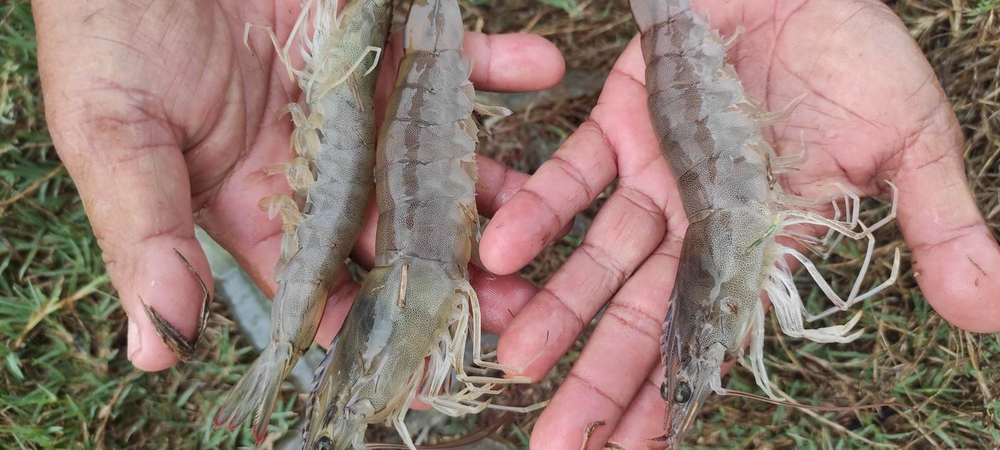
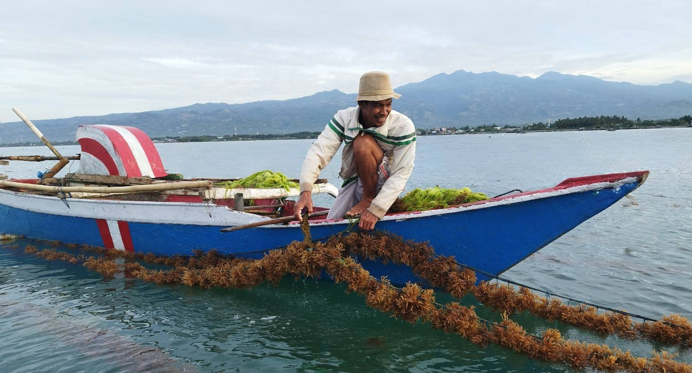
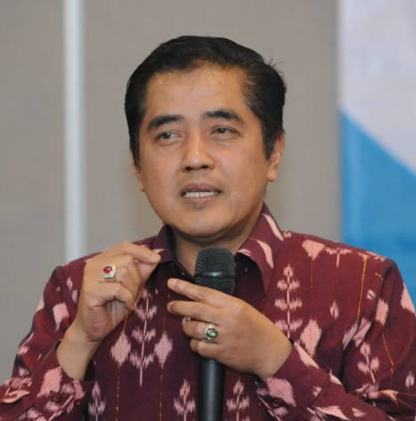

GQSP Indonesia Fase 2 · 2023–2026
Kemajuan melalui inovasi
Memperkuat mutu dan standar di rantai nilai udang, bandeng, dan rumput laut Indonesia, agar usaha kecil dan menengah dapat menjangkau pasar domestik dan internasional.
Tentang program
Infrastruktur mutu, produsen yang cakap, dan budaya mutu
Global Quality and Standards Programme (GQSP) didanai oleh Swiss State Secretariat for Economic Affairs (SECO) dan dilaksanakan oleh UNIDO. Di Indonesia, Fase 2 bekerja sama dengan Kementerian Kelautan dan Perikanan (KKP) dan Badan Standardisasi Nasional (BSN).
Rantai nilai
Tiga rantai nilai, satu standar mutu
Jelajahi rantai nilai udang, bandeng, dan rumput laut.

Peningkatan kapasitas
Angka sesuai yang dipublikasikan di gqspindonesia.org, September 2026.
75
Kegiatan
4.880
Peserta laki-laki
4.864
Peserta perempuan



“Saya menyampaikan penghargaan yang sebesar-besarnya kepada Program Global Quality and Standards atas dukungan yang tak tergoyahkan dan dedikasinya terhadap pengembangan standar kualitas dan keamanan untuk produk perikanan di Indonesia.”
Kemitraan
GQSP Indonesia memperkuat infrastruktur mutu, mendukung UKM, dan menumbuhkan budaya mutu. Hubungi tim program untuk informasi kemitraan.
Newsletter GQSP
Terima berita program dan informasi publikasi terbaru.